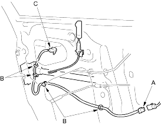
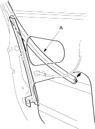
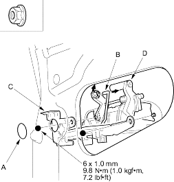
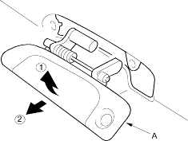

- With cylinder switch: Disconnect the cylinder switch connector (A) and detach the harness clips (B), then remove the cylinder switch (C).

- Pull the glass run channel (A) away as necessary.

- Remove the maintenance hole (A). Disconnect the outer handle rod (B) and remove the nuts, then remove the outer handle protector (C) from the outer handle (D).
Fastener Locations
 : Nut, 2
: Nut, 2

- Pull out the outer handle (A) in the numbered sequence and remove it.
